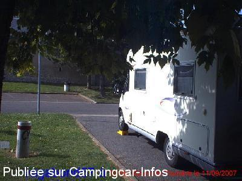
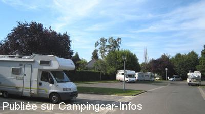

APN = Parking toléré jour/nuit de :
SAINTE MAURE DE TOURAINE
(N° 791)
Accès/adresse :
Avenue Ronsard
Parking Ronsard
37800 SAINTE MAURE DE TOURAINE
Parking Ronsard
37800 SAINTE MAURE DE TOURAINE
Latitude : (Nord) 47.11083° Décimaux ou 47° 6′ 38′′
Longitude : (Est) 0.61611° Décimaux ou 0° 36′ 57′′
Tarif : Gratuit
Services :

Autres informations :
Tel Office de Tourisme : +33 (0)247 656 620

Le 04/10/2007 par vagabond57

Le 06/09/2007 par Bernard.Tartois
de
Dutheil jean yves
le 07/12/2015 :
Nous sommes passés début décembre, aire squattée . Dommage pour le commerce locale.
Nous sommes passés début décembre, aire squattée . Dommage pour le commerce locale.
de
papy chapeaux
le 28/07/2015 :
aire en plein centre ville aucun intérêt allez plutôt au terrain de camping
aire en plein centre ville aucun intérêt allez plutôt au terrain de camping
de
phacelie
le 23/04/2014 :
nuit du dimanche de Pâques 2014
aire tranquille propre agréable desemplacements de libre encore à 21 heures à l'entrée de la ville
nuit du dimanche de Pâques 2014
aire tranquille propre agréable desemplacements de libre encore à 21 heures à l'entrée de la ville
de
Philippe51
le 26/07/2011 :
Nous avons passés une très bonne soirée. Attention le vendredi c'est jour de marché..... Sinon aire sympathique à deux pas de la ville.
Nous avons passés une très bonne soirée. Attention le vendredi c'est jour de marché..... Sinon aire sympathique à deux pas de la ville.
de
Cody Karson
le 28/07/2010 :
Endroit très bien, facile d'accès et assez calme très proche des commerçants.
Endroit très bien, facile d'accès et assez calme très proche des commerçants.
de
Pierre
le 16/10/2007 :
Bonjour. Ai fréquenté, trois années sur cinq, cet endroit toujours aussi propre et fait un petit tour en montant dans les petites rues vers la ville pour trouver les patisseries spéciales du coin. Hum... miam miam... Sympa +++ Merci à cette petite cité et à son accueil.
Bonjour. Ai fréquenté, trois années sur cinq, cet endroit toujours aussi propre et fait un petit tour en montant dans les petites rues vers la ville pour trouver les patisseries spéciales du coin. Hum... miam miam... Sympa +++ Merci à cette petite cité et à son accueil.
de
Sylvie et Eric
le 18/11/2005 :
De passage entre Bordeaux et le Loiret, nous avons été enchantés de trouver cette "aire de repos" (bien nommée). De plus, la ville est très jolie. Dommage que l'office du tourisme soit fermé hors saison, justement les samedis, dimanches et jours fériés!!!
De passage entre Bordeaux et le Loiret, nous avons été enchantés de trouver cette "aire de repos" (bien nommée). De plus, la ville est très jolie. Dommage que l'office du tourisme soit fermé hors saison, justement les samedis, dimanches et jours fériés!!!